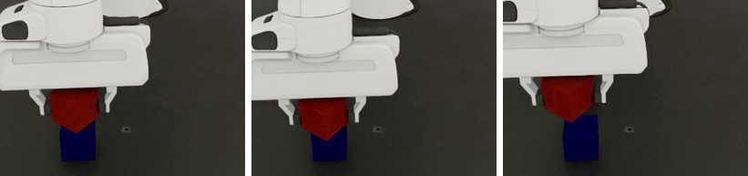
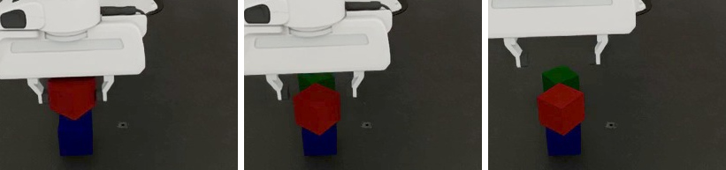
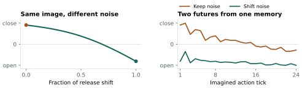

MiniDayDreamer
The first time you watch the frozen policy fail, it looks like a successful stack. The arm picks up the red cube, carries it across the table and lowers it onto blue. Then it lifts red back into the air. The fingers never opened.
We wanted to see whether a robot that already knew most of the task could learn that last decision in its dreams. We froze its policy and trained a second, much smaller controller inside a learned world model. The only thing it could change was the noise going into the policy. We borrowed that idea from Diffusion Steering via Reinforcement Learning (DSRL).
We tested this idea first with a policy that could read the cube positions, then with one trained on camera images and demonstration actions. In each case, we trained the steering in imagination and judged it by the stacks the arm completed back in Isaac.
Watch the same placement twice
Frozen RGB policy

With dream-trained steering

Matched Isaac replays of scene 1310005. Each row shows the approach, the first few ticks after the release opportunity, and the end of the trial. Both runs started with the same scene and noise seed.
In the lower row, the gripper received an open command at tick 132. Red was 2.1 mm from the center of blue and 0.3 mm below nominal stacking height. That was close enough. In the upper row the gripper held on for the rest of the episode. A fixed noise shift also stacked this particular scene. To find out what the learned steering added, we had to compare them across more scenes.
First, give the arm the cube positions
We started in NVIDIA Isaac with a Franka arm and privileged simulator state. Both the policy and the world model could read the positions of the hand and the cubes directly. This let us test the steering idea before asking a camera model to infer where everything was.
Our first imitation policy learned from 24 successful demonstrations. It lifted the cube on all 50 test scenes and stacked it on two. Training a noise controller in a world model fitted to the demonstrations produced one stack. Adding varied rollouts to the world-model data produced two. Watching the arm lift red was a poor way to judge how much of the task it had learned.
The cube was already in the wrong place
We gave the recurrent state-space model (RSSM) six recorded actions and asked where red would end up. A prediction that simply left red at its last measured position beat both of our models. Looking at the first tick exposed part of the problem. The model had to reconstruct the cube's absolute position from memory, and that reconstruction had already drifted before it imagined any actions.
| Six-tick cube forecast, mean error | Demos only | With varied rollouts |
|---|---|---|
| Predict no movement | 9.1 mm | 9.1 mm |
| Original absolute-position RSSM | 63.1 mm | 42.8 mm |
| RSSM anchored at the measured state | 4.7 mm | 2.7 mm |
We carried the measured position and latest displacement into the recurrent state, trained it to predict changes in position, and included six-step forecasts in the loss. The table uses the same 705 windows from 12 separate scenes for every row. This repair gave us a model accurate enough to investigate decisions near release.
We tried giving the actor more time to see the consequences of each command. On 50 new scenes, the varied-data actor made four stacks with six imagined ticks and three with 24. Both versions often stalled on the way to the target. We went back to the trajectories to look for decisions we could score more precisely, including the position of red when the fingers first opened.
In a later state-input experiment, we trained on imagined trajectories with a reward for releasing near the target. On 128 fresh scenes with two matched noise draws each, stacking rose from 59.8% to 78.7%, averaged over five steering seeds. All five beat the frozen base. The paired 95% interval for the gain was +10.9 to +27.0 percentage points. An otherwise matched actor using the older reward reached 77.7%. The experiment gave us a reason to try steering from cameras, while leaving open how much the new reward helped. State-input trial records.
What the camera model dreams
The RGB experiment used a different policy. We trained a flow-matching policy on table and wrist images and expert actions from 72 successful demonstrations. The visual RSSM learned from 24 of those demos and 72 varied rollouts. Its memory tracks image features and task progress across actions. An imagined step predicts the next features, so we can feed those features into the frozen policy and take another step without rendering a frame.
For a camera encoding ot and a Gaussian noise sample ε, the policy outputs a three-action chunk. A shift Δε changes the chunk the same function generates.
at:t+2 = πθ(ot, ε + Δε)
The weights θ stay fixed. We shift only the gripper coordinate of the noise. The flow still generates the entire action chunk, so changing that coordinate can also perturb the arm motion.

One release opportunity from the filmed scene. At left, holding the camera features and starting noise fixed, increasing the shift takes the first gripper command from +0.91 (close) to -0.81 (open). At right, each curve follows the gripper commands along one 24-tick imagined branch from the same RSSM memory.
A fixed shift taught us what to learn
We revisited 127 RGB runs that had lifted and failed. Of the 103 that reproduced the failure on replay, 23 reached the placement window and never opened. We then tested two release proposals on identical inputs from 372 recorded interventions. A fixed shift opened the gripper for all three ticks on every input. The earlier learned proposal did so on only 251. We kept the reliable shift and trained the new actor to choose between applying it now and waiting another chunk.
In imagination, both branches start with the same memory and Gaussian draw. Opening earns more when the cubes appear centered and at stacking height in the two views. We tracked the red and blue centers in each camera and used expert releases to estimate what a seated cube looks like. This cue depends on the cube colors and camera layout. The RSSM exaggerated how far red would descend, so we calibrated its vertical forecast on 21 six-tick development windows. The fitted multiplier was 0.261. With that correction frozen, each of five actors trained for 1.29 million imagined action ticks. Isaac supplied the held-out test.
Back at the table
We paired runs by scene and starting noise. A stack counted only if the gripper was open, the cubes were aligned and nearly still, and the placement held for the final eight ticks. We then asked which controllers finished the job on the 164 pairs where the frozen base or the learned actor stacked. Every row uses those same pairs. Trials where both missed fall outside this comparison.
| Controller | Stacks | Share of 164 |
|---|---|---|
| Frozen RGB policy | 97/164 | 59.1% |
| Fixed noise shift | 131/164 | 79.9% |
| Fixed shift with the actor's visual trigger | 136/164 | 82.9% |
| RSSM-trained steering | 155/164 | 94.5% |
There were 88 stacks that both policies made, 67 that only steering made, and nine that only the frozen policy made. That is 58 more stacks. Selecting pairs where at least one policy succeeded raises both percentages and favors those two policies in a comparison with a third. Across the full, unfiltered evaluation, the RSSM-trained controller gained 18.1 percentage points over the frozen base (paired 95% interval +12.5 to +24.1).
Did the timing learned in dreams carry over?
In 153 paired trials, both the original fixed-shift controller and the dream-trained system intervened. Within those pairs, the dream-trained system first shifted the noise a median of six ticks later and 13.3 mm lower. That timing difference includes the effect of the visual trigger. Giving the fixed shift the same trigger narrowed the full-bank gap to 1.6 percentage points in favor of the learned actor (95% interval -2.5 to +5.6). A fixed shift at a good release opportunity was already an effective controller.
The arm in the opening sequence already knew how to get red onto blue. What it lacked was a reliable decision about when to let go. The RSSM let us take one camera history, try opening now, then start from that same history and try waiting. Those imagined consequences supplied the training signal for the steering actor. With the RGB policy still frozen, that actor brought more completed stacks back to Isaac.
Code and reading. MiniDayDreamer implementation and reproduction guide.
The experiment draws on DayDreamer and Diffusion Steering via Reinforcement Learning. Ishan Shah's TinyDreamer walkthrough inspired the format of this note.